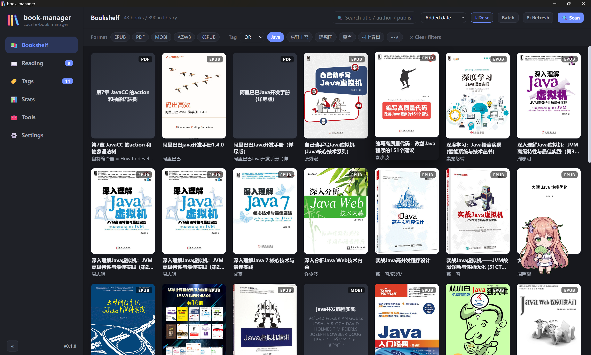
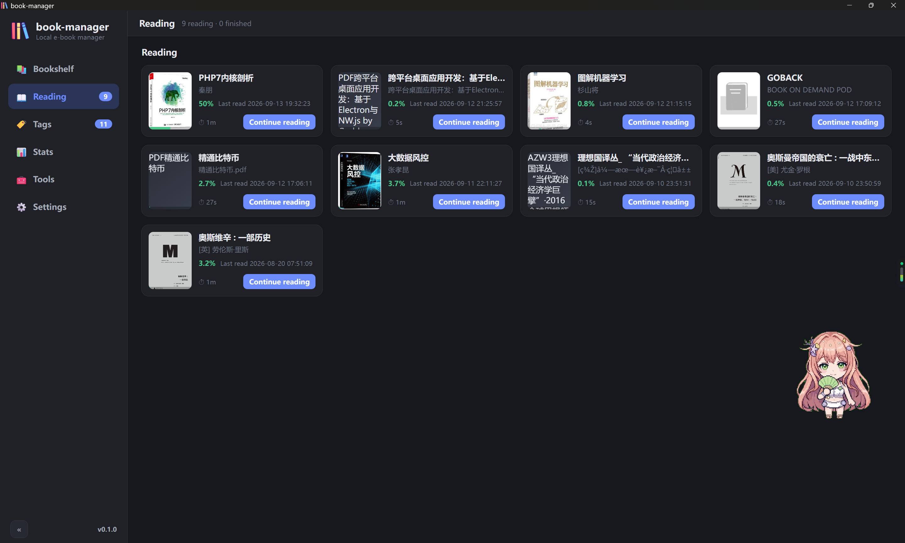
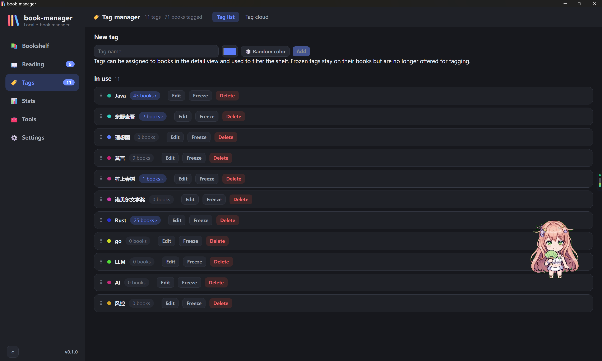
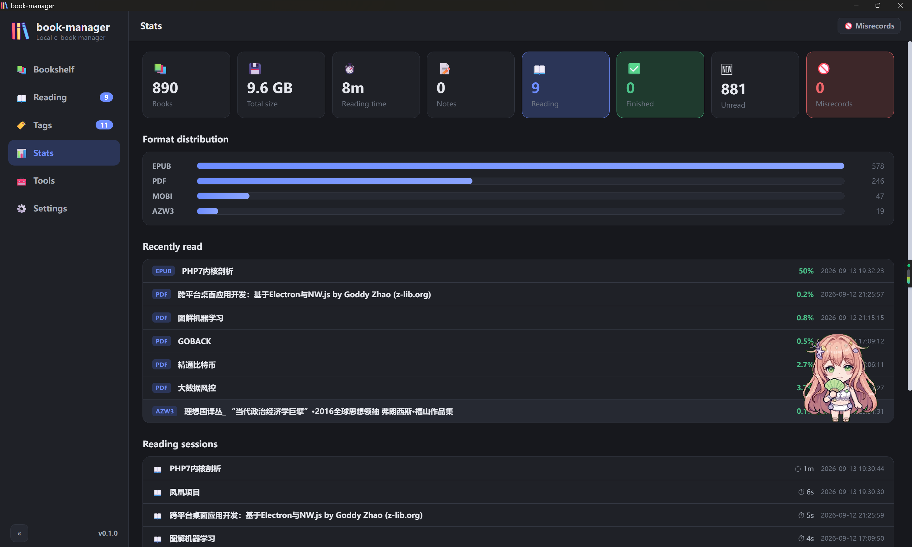
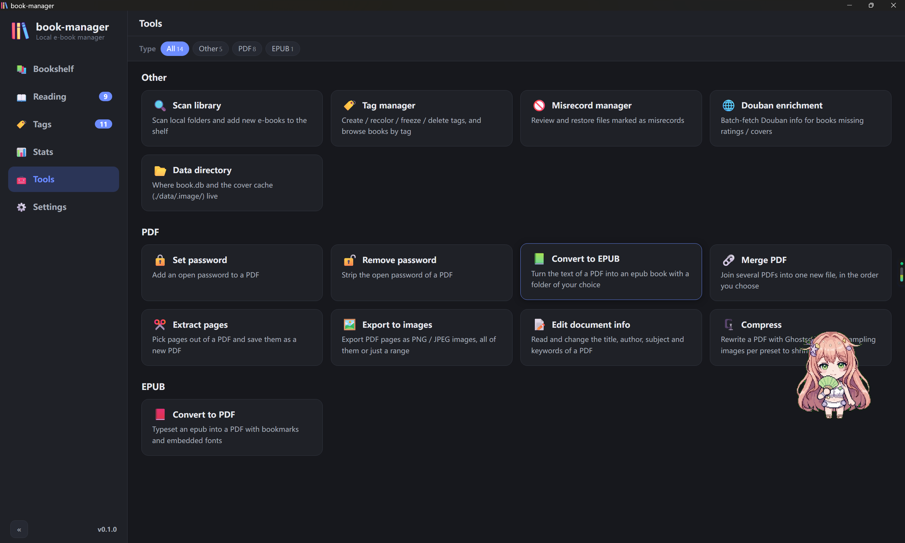
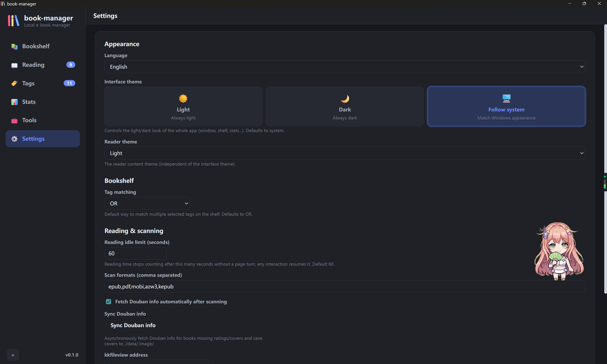

📂
Folder scanning
Scan local folders and pull out title, author, publisher, language, description, size and MD5, plus the cover art. EPUB, PDF, MOBI, AZW3 and KEPUB are supported.
Your local e-book library for Windows
A local-first e-book manager built with Wails v2, Go and React. Point it at your folders, keep the shelf tidy with tags, read epub / pdf / mobi right inside the app, and clean up your PDFs with fourteen built-in tools — nothing ever leaves your disk, everything lives in a single SQLite file.
Windows 10 / 11 · portable, no installer · MIT licensed

Scan local folders and pull out title, author, publisher, language, description, size and MD5, plus the cover art. EPUB, PDF, MOBI, AZW3 and KEPUB are supported.
A cover grid with keyword search, format filter, multi-tag «or / and» filtering and several sort orders; cards show reading progress and the Douban rating, and the scroll position is remembered.
Create, rename, recolor, freeze or delete tags, drag them into your own order, roll a random color, or browse them as a tag cloud whose size follows the book count.
Fetch covers, links, ratings and rating counts from Douban by title — in batches, or one book at a time from the detail dialog.
EPUB / KEPUB through epub.js, PDF through pdf.js, and MOBI / AZW3 with a built-in PalmDoc decoder that renders the embedded images too. Position, page count and progress are recorded per book, and encrypted PDFs ask for the password once.
Change the font size from the reader toolbar and flip on eye-care mode for a warm page; both are session-local, so your global settings stay untouched.
Every session adds to the total reading time. Staying on one page only counts one minute, and that idle cap is configurable in Settings.
Select any text while reading to attach a note with its quote and position; notes can be reviewed and deleted later.
Passwords, merge, page extraction, metadata, compression, PDF → EPUB, EPUB → PDF and image export — all offline, all on your own files.
Mark a mis-detected file as a misrecord and the next scan skips it by path and MD5; restore it whenever you like.
Totals for books, size, reading time and notes, the format breakdown, the latest additions and the full list of reading sessions.
The interface ships in English, Simplified Chinese and Traditional Chinese.
No account, no cloud, no telemetry — one SQLite file next to the executable.
Closing the window keeps the app in the system tray, and starting it again simply reopens the window that is already there.





Everything runs offline, on files you pick — including the PDFs already on your shelf.
Set an open password on a PDF.
Remove the open password from a PDF.
Merge several PDFs into one new file, in order.
Pick pages out of a PDF and save them as a new PDF.
Save PDF pages as PNG / JPEG images, optionally only the pages you name.
View and edit the title, author, subject and keywords of a PDF.
Rewrite a PDF with Ghostscript, downsampling images per preset to shrink it.
Lay out the text layer of a PDF as an epub, with an optional output folder.
Lay out an epub as a PDF with a bookmark outline, embedded fonts and selectable text.
Scan local folders and add new e-books to the shelf.
Create, recolor, freeze and delete tags; browse books by tag.
Review and restore files marked as misrecords.
Batch-fetch Douban information for books missing ratings or covers.
Where book.db and the cover cache live, with a button to open it.
go install github.com/wailsapp/wails/v2/cmd/wails@latestjust setup | install the frontend dependencies |
just dev | dev mode with hot reload |
just build | production build → src/build/bin/book-manager.exe |
just release | release build → release/book-manager.exe |
just test | Go backend tests, JS parsers and the i18n check |
just ui-test | headless browser smoke test of the UI (needs Edge + playwright-core) |
just icon | regenerate the app icons from asserts/logo.png |
just fmt | gofmt and go vet the backend |
just docs | regenerate the READMEs and the docs site |
just push "msg" | commit everything and push to main |
Development conventions live in agents.md — every session ends with a commit and a push.
<data dir>/book.db — SQLite, pure Go, override the directory with the BOOKMANAGER_DATA_DIR environment variable.<data dir>/covers/ and <data dir>/.image/.In production builds (with the assets embedded) some WebView2 + GPU combinations stop repainting because of the Wails hide / show visibility workaround — the window shows nothing but its background colour. The workaround is already in main.go:
Windows: &windows.Options{
WebviewGpuIsDisabled: true, // --disable-gpu; harmless for a text app
},To diagnose this, build with wails build -debug to get DevTools, or attach a debugger with WEBVIEW2_ADDITIONAL_BROWSER_ARGUMENTS=--remote-debugging-port=9333.
Version constant in src/version.go.src/version.go, run just release, then commit and push.Every release ships a single portable executable. Unzip it, run it, and it creates its data folder next to itself.